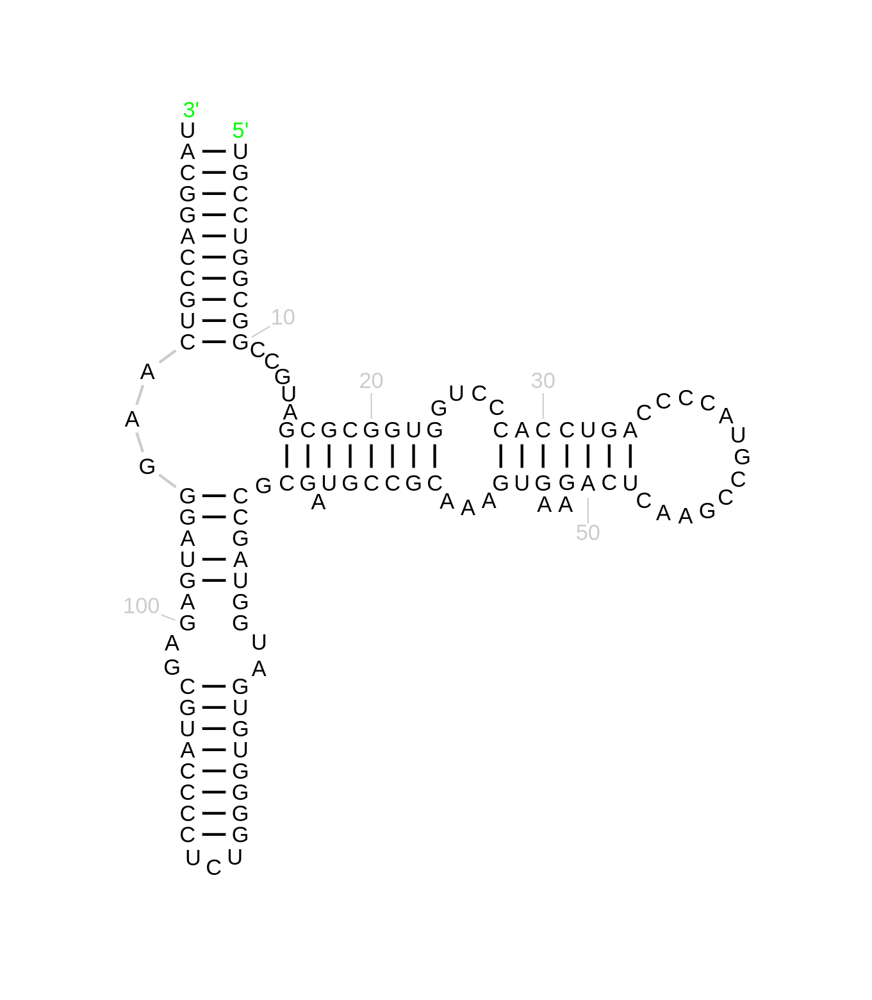
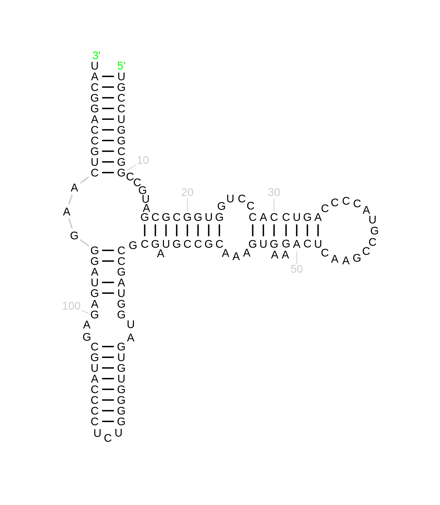
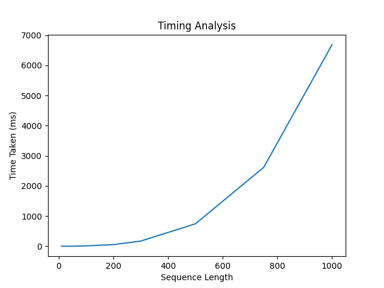

CS F364 Design and Analysis of Algorithms
Assignment 2: RNA Folding Problem
Problem Description
Ribonucleic Acid, more commonly known as RNA, is a single-stranded biological molecule. However, much of their behaviour is defined by the Secondary Structure they fold into. These Secondary Structures form via the matching up of base pairs, with the rule being that A can only match with U, whereas C always matches with G. The match-up can also must ensure that the overall structure stays kink-free and knot-free. Our problem deals with finding the secondary structure with the maximum number of base pairs, for a given RNA sequence.
Algorithm Pseudocode
Initialize OPT(i,j) = 0 whenever i >= j - 4
For k = 5, 6, ... n - 1
For i = 1, 2, ... n - k
Set j = i + k
OPT(i,j) = max{OPT(i,j-1), max{1 + OPT(i,t-1) + OPT(t+1,j-1)}}
t ranges from 1 to j - 5 such that it is allowed to pair with j.
Experimental Results
Thermus thermophilus 5S rRNA
5S ribosomal RNA from Escherichia coli 

Synthetic construct M-box riboswitch
Homo sapiens (human) RNA, 5S ribosomal 1
Homo sapiens (human) small nucleolar RNA, C/D box 3A The structures generated by our algorithm and the real structure from RNAcentral.com do not match as the latter does not have a maximum energy structure, whereas our algorithm generates the structure with the maximum number of base pairs.
Timing Analysis
The code runs in O(n^3) time complexity. 
Algorithm Documentation
Algorithm documentation can be found here.